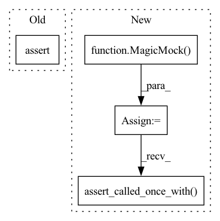

Pattern ID :10232
Before Change
else:
proposal.compute_acceptance.assert_not_called()
proposal.evaluate_likelihoods.assert_not_called()
assert np.all(proposal.samples["logL"] == 0.0)
def test_populate_not_initialised(proposal):After Change
)
proposal.compute_acceptance = MagicMock(side_effect=[0.5, 0.8])
proposal.model = MagicMock()
proposal.model.batch_evaluate_log_likelihood = \
MagicMock(return_value=log_l)
proposal.plot_pool = MagicMock()
proposal.convert_to_samples = MagicMock(
side_effect=lambda *args, **kwargs: args[0]
)
FlowProposal.populate(proposal, worst_point, N=10, plot=True)
proposal.forward_pass.assert_called_once_with(
worst_point, rescale=True, compute_radius=True,
)
proposal.radius.assert_called_once_with(worst_z, worst_q)
assert proposal.r == 1
draw_calls = [
call(2, r=1.0, N=5, fuzz=1.0, var=2.0),
call(2, r=1.0, N=5, fuzz=1.0, var=2.0),
]
proposal.draw_latent_prior.assert_has_calls(draw_calls)
rejection_calls = [
call(z[0], worst_q), call(z[1], worst_q), call(z[2], worst_q)
]
proposal.rejection_sampling.assert_has_calls(rejection_calls)
proposal.plot_pool.assert_called_once()
proposal.convert_to_samples.assert_called_once()
np.testing.assert_array_equal(
proposal.convert_to_samples.call_args[0][0],
proposal.x
)
assert proposal.convert_to_samples.call_args[1]["plot"] is True
assert proposal.population_acceptance == (10 / 15)
assert proposal.populated_count == 2
assert proposal.populated is True
assert proposal.x.size == 10
if check_acceptance:
proposal.compute_acceptance.assert_called()
assert proposal.approx_acceptance == [0.4, 0.5]
assert proposal.acceptance == [0.7, 0.8]
else:
proposal.compute_acceptance.assert_not_called()
proposal.model.batch_evaluate_log_likelihood.assert_called_once_with(
proposal.samples
)
np.testing.assert_array_equal(proposal.samples["logL"], log_l)
def test_populate_not_initialised(proposal):In pattern: SUPERPATTERN
Frequency: 4
Non-data size: 4
Instances Fragment ID: 36013505
Project Name: mj-will/nessai
Commit Name: df638bbd58c045937979cbe3ccae1b7988a8dd77
Time: 2022-02-16
Author: michaeljw1@googlemail.com
File Name: tests/test_proposal/test_flowproposal/test_flowproposal_population.py
M Class Name: AnonimousClass
N Class Name: AnonimousClass
M Method Name: test_populate(2)
N Method Name: test_populate(2)
M Parent Class:
N Parent Class:
M File Name: tests/test_proposal/test_flowproposal/test_flowproposal_population.py
N File Name: tests/test_proposal/test_flowproposal/test_flowproposal_population.py
M Start Line: 339
M End Line: 386
N Start Line: 292
N End Line: 391
Before Change
mock_pickle.assert_called_once()
assert out.model == model
assert model.likelihood_evaluations == 4
assert obj.resumed is True
After Change
obj = MagicMock()
obj.model = model
obj._uninformed_proposal = MagicMock()
obj._uninformed_proposal.resume = MagicMock()
obj._flow_proposal = MagicMock()
obj._flow_proposal.resume = MagicMock()
weights_file = "weight.pt"
flow_config = dict(a=1)
with patch(
"nessai.samplers.base.BaseNestedSampler.resume", return_value=obj
) as mock:
out = NestedSampler.resume(
"test.pkl",
model,
flow_config=flow_config,
weights_file=weights_file,
)
assert out is obj
mock.assert_called_once_with("test.pkl", model)
obj._uninformed_proposal.resume.assert_called_once_with(
model,
)
obj._flow_proposal.resume.assert_called_once_with(
model,
flow_config,
weights_file, Fragment ID: 36013504
Project Name: mj-will/nessai
Commit Name: 7a5a304ee2d7b313deb71bc709f3e1b2543dd3a7
Time: 2022-08-29
Author: m.williams.4@research.gla.ac.uk
File Name: tests/test_samplers/test_nested_sampler/test_resume.py
M Class Name: AnonimousClass
N Class Name: AnonimousClass
M Method Name: test_resume(1)
N Method Name: test_resume(1)
M Parent Class:
N Parent Class:
M File Name: tests/test_samplers/test_nested_sampler/test_resume.py
N File Name: tests/test_samplers/test_nested_sampler/test_resume.py
M Start Line: 88
M End Line: 103
N Start Line: 55
N End Line: 83
Before Change
new_points = model.new_point(N=1)
log_l = model.evaluate_log_likelihood(new_points)
assert log_l.size == 1
assert model.likelihood_evaluations == 1
After Change
x = 1
model.likelihood_evaluations = 0
model.log_likelihood = MagicMock(return_value=2)
log_l = Model.evaluate_log_likelihood(model, x)
model.log_likelihood.assert_called_once_with( x)
assert log_l == 2
assert model.likelihood_evaluations == 1
Fragment ID: 36013500
Project Name: mj-will/nessai
Commit Name: db0440d2c862fbab5b29ac40863d921e2ad16a87
Time: 2021-07-06
Author: m.williams.4@research.gla.ac.uk
File Name: tests/test_model.py
M Class Name: AnonimousClass
N Class Name: AnonimousClass
M Method Name: test_likelihood_evaluations(1)
N Method Name: test_likelihood_evaluations(1)
M Parent Class:
N Parent Class:
M File Name: tests/test_model.py
N File Name: tests/test_model.py
M Start Line: 80
M End Line: 83
N Start Line: 190
N End Line: 196
Before Change
x = {"theta": [1.0], "theta_radial": [0.5]}
with pytest.raises(RuntimeError) as excinfo:
Angle.x_prime_log_prior(reparam, x)
assert "Prime prior" in str(excinfo.value)
def test_both_parameters():After Change
)
reparam._k = 0.5
reparam._prime_prior = MagicMock(return_value=0.5)
reparam.has_prior_prior = True
reparam.prime_parameters = ["x", "y"]
out = Angle.x_prime_log_prior(reparam, x_prime)
reparam._prime_prior.assert_called_once_with(
x_prime["x"],
x_prime["y"],
k=0.5,
)
assert out == 0.5
def test_x_prime_log_prior_error(reparam): Fragment ID: 36013503
Project Name: mj-will/nessai
Commit Name: b53fe855e019f16687e61e99ebb0249d9efb969a
Time: 2022-01-25
Author: michaeljw1@googlemail.com
File Name: tests/test_reparameterisations/test_angle.py
M Class Name: AnonimousClass
N Class Name: AnonimousClass
M Method Name: test_x_prime_log_prior(1)
N Method Name: test_x_prime_log_prior(1)
M Parent Class:
N Parent Class:
M File Name: tests/test_reparameterisations/test_angle.py
N File Name: tests/test_reparameterisations/test_angle.py
M Start Line: 153
M End Line: 157
N Start Line: 155
N End Line: 171